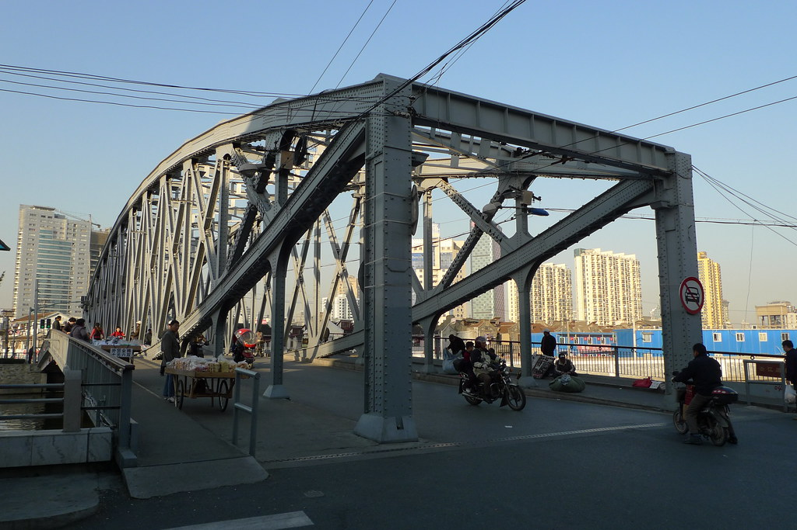

诗歌
秋日游葡萄园
翡翠碧玉挂滿园，
葡萄美酒醉同窗。
莫道落叶报寒信，
且将秋风当春光。
第一辑
翡翠碧玉挂滿园，
葡萄美酒醉同窗。
莫道落叶报寒信，
且将秋风当春光。
秋雨淅沥织轻簾，
伞花点点堤岸边。
河边小径桂花香，
金果舖地是黄楝。
秀女弯腰细捡拾，
笑语果实串手练。
清水微微起涟漪，
漁翁独坐釣河鲜。
空朦茫茫笼四野，
疑入天宫瑶池界。
白云把月亮擦成一盏明灯，
风把它挂在了树梢上，
小巧的土戏台，
就笼罩在银色的帐幕里。
村上的阿哥小妹，
己把激动和不安写在脸上，
村小老师新编的《双推磨》
首演定要不负众望。
萤火虫提着灯笼来照明，
纺织娘奏响织布曲也要来伴音，
咶噪的蝉识趣地屏息噤声，
星星睁大了眼睛。
悠扬的胡琴、笛子声里，
奋斗的苦乐、创业的曙光；
舒心的生活、爱情的甜蜜，
汇成一条小河奔涌激荡。
一阵惊雷似的掌声响起，
老槐树笑得枝颤叶飞，
载着满足和快乐的小船，
今夜会摇进每个人的梦乡。

夕阳斜照尘飞扬，
啸叫助威欢声亮。
雄狮猎豹战犹酣，
满村笑语哪队强。

木桥水光月照影，
散学过河闹盈盈，
姑娘小伙笑声起，
摇碎玉盘满河金。

第二辑
我家离苏州河上的浙江路桥很近，走出弄堂口就能看到他高大的钢铁身躯，还能听到有轨电車在桥上行驶的隆隆声。
夏天晚上，我常到桥上去乘凉，倚着栏杆看河里的船，河里的水。船沿着两岸停成两条长龙，闪着星星点点的灯光，河水悠悠地向黄浦江淌去。河水有点黑，还有点不好闻的味道，那轮明月却一点也不嫌弃他，照样把她美丽的脸印在水面上，泛着银白色的光。偶尔有一艘船驶过，摇碎了她的倩影，只一会儿，波平浪静，她就回来了。有时桥下会传来一陣悠扬的音乐声，那是近旁一条马路的转角处有小乐队在演奏。他们在人行道上挂起一块印着几十首曲名的布，人们只要给一角钱点一曲，随即就会响起二胡.琵琶.扬琴.笛子合奏的小夜曲。这时，行人纷纷围拢过来，停下脚步，静静地听，一场小小的马路音乐会就开始了。
每当此时，我就飞快地从桥上跑下来，杂在大人群里当听客。有一次，一个五十多岁的工人师傅要点曲，这很少見。他问：那（你们）会曹阳新村这只歌吗？曲布上没有这首歌名，乐队的人有点好奇，但仍然回答：会格。这是一首当年上海人很熟悉的歌。五十年代，上海市政府在普陀区建了一个很大的住宅区，大批缺房少屋的工人住了进去。一时间轰动了全上海，由此诞生了一首歌曲《曹阳新村》，报纸宣传，电台广墦，小学音乐课教唱，响彻了大上海。乐声响起，我情不自禁轻声地跟着唱起来：曹阳新村，真正好，一幢幢的房屋坚固又牢靠，村里村外，马路宽又大，好让公共汽车来回跑。这都是毛主席领导的好，工人才能住进了这样的好房屋。生产多加油啊，工作得更起劲啊，再造它千百个曹阳新新村！
一曲刚落，响起一片掌声。老师傅脸上笑着，手不住地抹眼角。一个年轻人问：老爷叔，你住进曹阳新村了？住进去了，住进去了，房子老好，房子老好。老师傅布滿皱纹的脸笑成了一朵花。泪水却顺着皱纹的小沟淌了下来。
又是一阵热烈的掌声。乐队再次响起，重奏一遍，让大家分享这份快乐。月亮从云中挤出来，河水更放慢了脚步。这是一个黄浦江畔，苏州河两岸到处飘荡歌声的年代。
夜色渐渐浓了，一辆电车响着当当当的铃声从桥上开下来，我跟着它一路小跑着回家，.夏夜的风吹得我浑身清凉爽快，心中无比快乐。这是我听过的最动人心弦的一场浙江路桥下的夏夜音乐会。

按现有原稿收录，保留原文用字与标点。
回到页首1965年，文革前夜。自1958一一1959年经历了人民公社化和大跃进，国民经济遭受严重破坏，从人1959年下半年开始了所谓三年困难时期，发生了大规模的饥荒。党中央在1959年开了庐山会议和1962年开了七千人会议，会议原意在总结经验教训，作出政策调整，恢复国民经济的发展，但因彭德怀写了揭示人民公社，大跃进的问题和刘少奇和毛主席发生成绩和向题是三七开还是七三开的矛盾。为文化大革命的发生埋下种子。
所以到一九六九年，国民经济已大幅好展，人民生活已有改善，社会和平稳定，但在这表面的平静之下正在酝酿一场烈火运动。“左”的思想仍很普遍。上面领导认为大学生要到社会实践中去补阶级斗争课，向劳动人民学习。所以1984年下半年让我们去农村参加正在进行的“四清”运动。
所谓的四清就是清经济，清组思想，清组织，清政治。我们四个学生到句容县，石狮公社花岸大队，与江宁县粮食局的三个干部编成一组，在村里开展四清，整大队，生产队的干部，白天和农民一起劳动，夜晚搞运动，分散住在贫苦农民家。我住在一农家的猪圈旁。缴粮票，伙会费（12元一月学校发的）给房东。！！
按现有原稿收录，保留原文用字与标点。
回到页首关于作者
作者1941年生于上海，1955年全家从上海搬到无锡石塘湾林庄，在江南乡村度过青少年时光。约1965年离乡赴大学求学。多年以后，他不时提笔，把记忆中的乡情、人物与时代写成诗和文章。